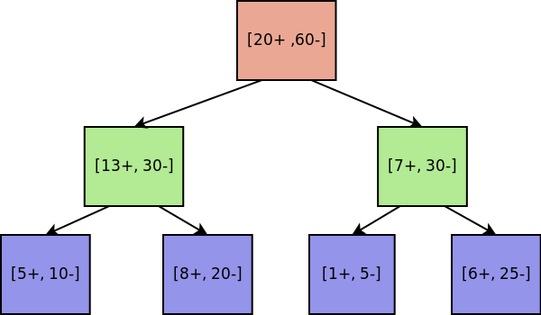

Category: 5.2: Tree models : Ranking and probability estimation trees
Category: medium (3)
workings:
To derive the labelling of each leaf we need to take into account the
cost ratio and the class distribution.
For $c = 1$, false negatives are as costly as false positives, so we
don't have to manipulate the class distribution in any way, we simple
label the leaf with the majority class, from left to right this is: "----".
Generally, for an arbitrary $c$, false negatives are $c$ times more
costly than false positives, we manipulate each leaf distribution to
take this into account by weighting the negative count with $c$. For
example, take the left most leaf with $c = 0.2$, $10 \cdot 0.2 = 2$.
Having taken into account the cost ratio we can now perform the same
technique above and predict the majority class which is "++--" for $c
= 0.2$.
In the case where the leaf class distribution is uniform, we predict
the majority class of the full dataset.
hint: Recall the definition of $c = \frac{c_{FN}}{c_{FP}}$, consider how
this additional information affects the class distributions in each
leaf.
comment:
Tests the student's knowledge of decision tree labelling given skewed
FN-FP costs.
Complexity 3 because it's more involved than simply labelling a tree
based on majority class, the added complexity of having to break ties
in the leaf by predicting majority class pushes this up a bit more as
it requires the student to have a good understanding of how
distributions effect predictions.
Author: Will Price
An unlabelled decision tree is given in Fig 1. You are asked to label
each leaf of the tree based on different cost assessments, for each
assessment you are given $c$, the ratio of the cost of false negatives
to false positives. Match the leaf class labellings with the costs. Fig 1: Decision Tree
explanation: Cost adjusted counts: $(5+, 4-), (8+, 8-), (1+, 2-), (6+, 10-)$
The second leaf is classified as $\ominus$ since $c \cdot 20 = 8$
which gives an equal number of weighted positives and negatives,
so we use the majority class, in this case negative to choose the
class label.